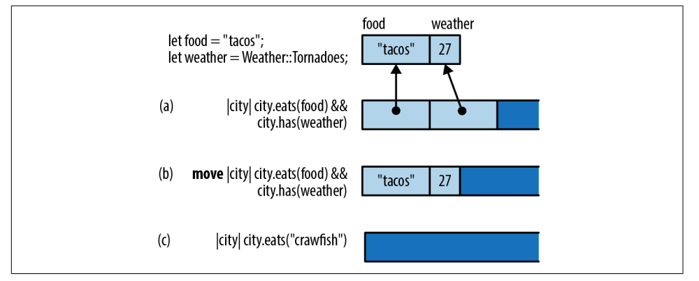

很多语言中都有闭包，有的叫匿名函数，有的叫 lambda 函数，用一个最简单的例子演示闭包，例如 sort_by_key 传入的就是一个闭包函数：
1 2 3 4 5 6 7 8 9 10 struct City { name: String , population: i64 , country: String , } fn main () { let mut cities = Vec ::<City>::new (); cities.sort_by_key (|city| -city.population) }
闭包可以捕获上下文中的变量，例如，下面的闭包使用了原本属于 sort_by_statistic 函数中的 stat，我们称闭包捕获了 stat：
1 2 3 4 fn sort_by_statistic (cities: &mut Vec <City>, stat: Statistic) { cities.sort_by_key (|city| -city.get_statistic (stat)); }
闭包在捕获变量的同时，会自动创建对 stat 的引用，所以该闭包的生命周期不能超过 stat，在函数返回的时候，会自动释放 stat。
我们来看一个复杂一些的例子，这段代码会编译错误，我们创建了一个新的线程进行排序，我们的闭包函数还引用了 cities 和 stat：
1 2 3 4 5 6 7 8 use std::thread;fn start_sorting_thread (mut cities: Vec <City>, stat: Statistic) -> thread::JoinHandle<Vec <City>> { let key_fn = |city: &City| -> i64 { -city.get_statistic (stat) }; thread::spawn (|| { cities.sort_by_key (key_fn); cities }) }
这段代码编译失败是因为存在两个原因：
由于 start_sorting_thread 中已经包含了对 cities 的可变引用，所以闭包不能在创建新的共享引用；
新创建的线程和调用者所在线程并行，start_sorting_thread 返回时，新线程可能还没开始，而 stat 由于不在作用域中，需要被释放；
解决方案我们告诉 Rust，需要偷取闭包所使用的的变量而不是借用，使用关键字 move 来进行声明：
1 2 3 4 5 6 7 8 use std::thread;fn start_sorting_thread (mut cities: Vec <City>, stat: Statistic) -> thread::JoinHandle<Vec <City>> { let key_fn = move |city: &City| -> i64 { -city.get_statistic (stat) }; thread::spawn (move || { cities.sort_by_key (key_fn); cities }) }
因此，Rust 提供了两种使用上下文中数据的方式：引用和偷取。
我们可以把函数或者闭包作为函数的参数传递，那么他们肯定是有类型的，例如：
1 2 3 4 5 6 7 8 9 10 11 12 13 14 15 16 17 18 19 20 21 22 fn main () { let mut cities = Vec ::<City>::new (); cities.sort_by_key (|city| -city.population); let is_asc = false ; fn city_population_desc (city: &City) -> i64 { -city.population } fn city_population_asc (city: &City) -> i64 { -city.population } let key_sort_fn : fn (&City) -> i64 = if is_asc { city_population_asc } else { city_population_desc }; cities.sort_by_key (key_sort_fn); }
这里 key_sort_fn 的类型是：fn(&City) -> i64，我们可以把函数存储在结构体字段中，fn 实际上指向函数机器代码的地址，所占空间就是一个机器字，一个函数可以接受另外一个函数作为参数，例如：
1 2 3 fn count_selected_cities (cities: &Vec <City>, test_fn: fn (&City) -> bool ) -> usize { ... }
这个函数没法接受闭包作为参数，因为类型不匹配，fn 只能表示函数，闭包虽然可调用，但不是 fn 类型。如果我们需要它能接受函数或者闭包同时参数，需要更改这个函数的签名，使用泛型约束 F 是一个 Fn 类型：
1 2 3 4 5 fn count_selected_cities <F>(cities: &Vec <City>, test_fn: F) -> usize where F: Fn (&City) -> bool { ... }
Fn(&City) -> bool 会自动被相关的函和闭包数实现，相当于限定了函数的签名，因此我们可以传入匹配的函数或者闭包。
在大多数语言中，闭包在堆中分配、动态分派和自动垃圾收集。因此，创建、调用和收集它们中的每一个都会花费一点点额外的 CPU 时间。更糟糕的是，闭包往往会禁止内联，这是编译器用来消除函数调用开销的关键技术。
Rust 闭包没有这些性能缺陷，与 Rust 中的其他所有内容一样，它们不会在堆上分配，除非将它们放入 Box、Vec 或其他容器中。而且由于每个闭包都有不同的类型，只要 Rust 编译器知道你正在调用的闭包的类型，它就可以内联该特定闭包的代码。Rust 的闭包设计使其运行的很快，即使在性能敏感代码中也可以使用它们。
下图展示了不同种类的闭包在内存上的布局：

闭包 (a) 使用这两个变量，在内存中，这个闭包看起来像一个包含对它使用的变量的引用的小结构；
闭包 (b) 完全一样，只是它是一个 move 闭包，包含了引用的值；
闭包 © 不使用其环境中的任何变量，所以这个闭包根本不占用任何内存。
FnOnce有些闭包只能使用一次，例如，下面的代码中的，闭包将捕获的 String 手动通过 drop 丢掉了，我们在调用的时候，就会出错：
1 2 3 4 5 6 7 8 9 10 11 12 13 fn call_twice <F>(closure: F)where F: Fn (), { closure (); closure (); } fn main () { let my_str = "hello" .to_string (); let f = || drop (my_str); call_twice (f); }
编译器会提示我们 my_str 已经被释放过了，它是 FnOnce 类型的：
error[E0525]: expected a closure that implements the `Fn` trait, but this closure only implements `FnOnce`
--> src/main.rs:13:13
|
13 | let f = || drop(my_str);
| ^^^^^^^^------^
| | |
| | closure is `FnOnce` because it moves the variable `my_str` out of its environment
| this closure implements `FnOnce`, not `Fn`
14 | call_twice(f);
| ---------- the requirement to implement `Fn` derives from here
根据提示，我们需要限定 F 是 FnOnce 类型的，就像 a + b 是 Add::add(a, b) 的简写一样，闭包调用展开之后其实是 closure.call() 或者 closure.call_once()：
1 2 3 4 5 6 7 8 9 10 11 12 fn call_twice <F>(closure: F)where F: FnOnce (), { closure (); } fn main () { let my_str = "hello" .to_string (); let f = || drop (my_str); call_twice (f); }
如果一个闭包并不转移自己的内部数据，那么它就不是 FnOnce，然而，一旦它被当做 FnOnce 调用，之后就无法再次调用了：
1 2 3 4 5 6 7 8 9 10 11 12 13 14 15 16 17 18 19 20 21 22 23 24 25 26 27 fn main () { let name = String ::from ("Tyr" ); let c1 = move |greeting: String | (greeting, name.clone ()); println! ("c1 call once: {:?}" , c ("qiao" .into ())); println! ("c1 call twice: {:?}" , c ("bonjour" .into ())); println! ("result: {:?}" , call_once ("hi" .into (), c1)); println! ("result: {:?}" , call_once ("hola" .into (), not_closure)); } fn call_once (arg: String , c: impl FnOnce (String ) -> (String , String )) -> (String , String ) { c (arg) } fn not_closure (arg: String ) -> (String , String ) { (arg, "Rosie" .into ()) }
1 2 3 4 5 6 7 8 9 10 11 12 13 14 15 16 17 18 19 20 21 22 fn main () { let name = String ::from ("Tyr" ); let vec = vec! ["Rust" , "Elixir" , "Javascript" ]; let v = &vec[..]; let data = (1 , 2 , 3 , 4 ); let c = move || { println! ("data: {:?}" , data); println! ("v: {:?}, name: {:?}" , v, name.clone ()); }; c (); c (); println! ("{}" , std::mem::size_of_val (&c)); println! ("{:?}" , data); }
FnMut还有另一种闭包，一种包含可变数据或 mut 引用的闭包。Rust 认为非 mut 值可以安全地跨线程共享，但是共享包含 mut 数据的非 mut 闭包是不安全的，从多个线程调用这样的闭包可能会导致各种竞争条件，因为多个线程试图同时读取和写入相同的数据。因此，Rust 多了一类闭包，FnMut。
任何需要 mut 访问值但不删除任何值的闭包都是 FnMut 闭包。 例如：
1 2 3 4 5 6 let mut i = 0 ;let incr = || { i += 1 ; println! ("Ding! i is now: {}" , i); }; call_twice (incr);
总结一下对三类 Rust 闭包的了解：
Fn 是一系列闭包和函数，可以不受限制地多次调用它们，还包括所有 fn 函数；
FnMut 指哪些需要 mut 访问捕获变量，并且可多次访问的闭包；
FnOnce 指哪些消耗值所有权，并且仅可以被调用一次的闭包；
从实现上来看，FnFnMutTrait，而 FnMut 又是 FnOnceTrait：
1 2 3 4 5 6 7 8 9 10 11 12 13 14 15 pub trait Fn <Args>: FnMut <Args> { extern "rust-call" fn call (&self , args: Args) -> Self ::Output; } pub trait FnMut <Args>: FnOnce <Args> { extern "rust-call" fn call_mut ( &mut self , args: Args ) -> Self ::Output; } pub trait FnOnce <Args> { type Output ; extern "rust-call" fn call_once (self , args: Args) -> Self ::Output; }
限制越少，范围越广泛，这使得 Fn 成为最独特和最强大的类别，FnMut 和 FnOnce 是更广泛的类别，包括具有使用限制的闭包。
FnMut 就像结构体如果想改变数据需要用 let mut 声明一样，如果想改变闭包捕获的数据结构，那么就需要 FnMut：
1 2 3 4 5 6 7 8 9 10 11 12 13 14 15 16 17 18 19 20 21 22 23 24 25 26 27 28 29 30 31 32 33 34 35 fn main () { let mut name = String ::from ("hello" ); let mut name1 = String ::from ("hola" ); let mut c = || { name.push_str (" Tyr" ); println! ("c: {}" , name); }; let mut c1 = move || { name1.push_str ("!" ); println! ("c1: {}" , name1); }; c (); c1 (); call_mut (&mut c); call_mut (&mut c1); call_once (c); call_once (c1); } fn call_mut (c: &mut impl FnMut ()) { c (); } fn call_once (c: impl FnOnce ()) { c (); }
在声明的闭包 c 和 c1 里，我们修改了捕获的 name 和 name1。不同的是 name 使用了引用，而 name1 移动了所有权，这两种情况和其它代码一样，也需要遵循所有权和借用有关的规则。所以，如果在闭包 c 里借用了 name，你就不能把 name 移动给另一个闭包 c1。
这里也展示了，c 和 c1 这两个符合 FnMut 的闭包，能作为 FnOnce 来调用。我们在代码中也确认了，FnMut 可以被多次调用，这是因为 call_mut() 使用的是 &mut self，不移动所有权。
Fn1 2 3 pub trait Fn <Args>: FnMut <Args> { extern "rust-call" fn call (&self , args: Args) -> Self ::Output; }
可以看到，它继承了 FnMut，或者说 FnMut 是 Fn 的 super trait。这也就意味着任何需要 FnOnce 或者 FnMut 的场合，都可以传入满足 Fn 的闭包。
1 2 3 4 5 6 7 8 9 10 11 12 13 14 15 16 17 18 19 20 21 22 23 24 25 26 27 28 29 30 31 32 33 34 fn main () { let v = vec! [0u8 ; 1024 ]; let v1 = vec! [0u8 ; 1023 ]; let mut c = |x: u64 | v.len () as u64 * x; let mut c1 = move |x: u64 | v1.len () as u64 * x; println! ("direct call: {}" , c (2 )); println! ("direct call: {}" , c1 (2 )); println! ("call: {}" , call (3 , &c)); println! ("call: {}" , call (3 , &c1)); println! ("call_mut: {}" , call_mut (4 , &mut c)); println! ("call_mut: {}" , call_mut (4 , &mut c1)); println! ("call_once: {}" , call_once (5 , c)); println! ("call_once: {}" , call_once (5 , c1)); } fn call (arg: u64 , c: &impl Fn (u64 ) -> u64 ) -> u64 { c (arg) } fn call_mut (arg: u64 , c: &mut impl FnMut (u64 ) -> u64 ) -> u64 { c (arg) } fn call_once (arg: u64 , c: impl FnOnce (u64 ) -> u64 ) -> u64 { c (arg) }
Copy、Clone 闭包对于那些 非 move 闭包，并且只包含共享引用的闭包是可以 Clone 和 Copy 的：
1 2 3 4 let y = 10 ;let add_y = |x| x + y;let copy_of_add_y = add_y; assert_eq! (add_y (copy_of_add_y (22 )), 42 );
对于 move 类型闭包，如果规则更简单，如果闭包中捕获的值都是可 Copy 的，它就是可 Copy 的，如果捕获的是可 Clone 的，那就是可 Clone 的：
1 2 3 4 5 6 7 let mut greeting = String ::from ("Hello, " );let greet = move |name| { greeting.push_str (name); println! ("{}" , greeting); }; greet.clone ()("Alfred" ); greet.clone ()("Bruce" );
当克隆 greet 的时候，它里面的每个东西都会被克隆，所以这里有两个 greeting 的副本，它们会被单独修改。
本质上闭包是一种匿名类型，一旦声明，就会产生一个新的类型，但这个类型无法被其它地方使用。这个类型就像一个结构体，会包含所有捕获的变量。
1 2 3 4 5 6 7 8 9 10 11 12 13 14 15 16 17 18 19 20 21 22 23 24 25 26 27 28 29 30 31 32 33 34 35 36 37 38 use std::{collections::HashMap, mem::size_of_val};fn main () { let c1 = || println! ("hello world!" ); let c2 = |i: i32 | println! ("hello: {}" , i); let name = String ::from ("tyr" ); let name1 = name.clone (); let mut table = HashMap::new (); table.insert ("hello" , "world" ); let c3 = || println! ("hello: {}" , name); let c4 = move || println! ("hello: {}, {:?}" , name1, table); let name2 = name.clone (); let c5 = move || { let x = 1 ; let name3 = String ::from ("lindsey" ); println! ("hello: {}, {:?}, {:?}" , x, name2, name3); }; println! ( "c1: {}, c2: {}, c3: {}, c4: {}, c5: {}, main: {}" , size_of_val (&c1), size_of_val (&c2), size_of_val (&c3), size_of_val (&c4), size_of_val (&c5), size_of_val (&main), ) }
这将输出：
c1: 0, c2: 0, c3: 8, c4: 72, c5: 24, main: 0
说明，不带 move 时，闭包捕获的是对应自由变量的引用；带 move 时，对应自由变量的所有权会被移动到闭包结构中。闭包的大小跟参数、局部变量都无关，只跟捕获的变量有关。